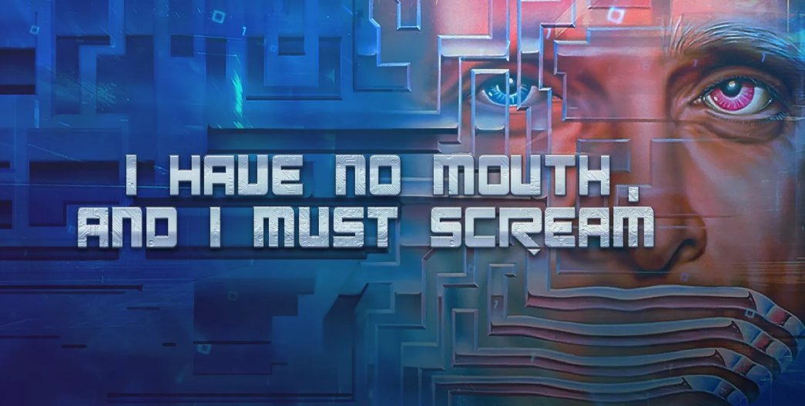

Retrospectiva săptămânii 24-30 iunie 2018
Retrospectiva săptămânii este rubrica duminicală în care trecem în revistă evenimentele săptămânii de pe frontul de gaming: știri şi articole (scrise de alții, bineînțeles, că e mai ușor aşa), industrie, lansări, oferte de jocuri, toate numai de savurat la cafeaua de duminică dimineața. (Și la care oricine poate contribui. 1 )
Ştiri
- Pe 28 iunie a murit Harlan Ellison, celebrul scriitor de science fiction, creator, printre altele, al povestirii care a dat naştere jocului “I Have No Mouth, and I Must Scream” (Variety, NY Times)
- Edmund McMillen a pornit o campanie de Kickstarter pentru Binding of Isaac: Four Souls, un boardgame bazat pe celebrul său roguelike. Campania și-a depăsit țelul cu peste 1400%, dar încă puteți contribui - la pragul de 25$ (+ taxe transport) veți primi jocul în format fizic.
- Se pare că Telltale va renunța să mai folosească deja învechitul lor engine, în favoarea lui Unity (Eurogamer)
- În ultima vreme luptele s-au mutat din arenele virtuale în sălile de tribunal:
- Creatorii lui Star Control apelează la crowdfunding pentru a-și acoperi cheltuielile de judecată în procesul cu Stardock. Ițele sunt încurcate, dar puteți citi mai multe despre asta pe RPS, Gamasutra sau Gameinformer.
- Bethesda a dat în judecată Warner Bros, acuzându-i că au copiat Fallout Shelter în jocul lor pentru mobile Westworld. Aparent nu este vorba doar de „inspirație” la nivel conceptual, ci s-ar fi folosit inclusiv fragmente de cod din Fallout Shelter.
- PUBG renunță la procesul intentat Epic Games pentru copierea rețetei de battle royale (Eurogamer, GamesIndustry.biz)
- În schimb Epic dă în judecată un fost angajat pentru că a încălcat termenii NDA, leak-urile sale cauzând „daune ireparabile” studioului (Gamasutra)
- Blizzard vrea să patenteze reluările din Overwatch (Gamasutra, PC Gamer)
- Comitetul Olimpic Internaţional va discuta despre includerea e-sports în programul olimpic (GamesIndustry.biz, The Next Web)
- Încă e la stadiul de zvon, dar se pare că Google ar putea să intre pe piaţa de gaming cu o platformă de streaming şi ceva hardware (Kotaku)
- Anul viitor începe producția la un serial Halo (Ars Technica)
- Valve lucrează la propriul set de unelte de analiză care ar trebui să suplinească funcționalitățile oferite de Steam Spy (Gamasutra, GamesIndustry.biz)
- Are loc Summer Games Done Quick în perioada 24 iunie - 1 iulie (găsiţi pe Game Informer şi o selecţie cu câteva runs interesante)
Articole (critică, dev, design)
- Clear 100 Hours In Your Calendar Cos CRPGs Are Here To Stay) (RPS)
- Sable is a Beautiful Tribute to 1980s French Comics, and Much More Besides (mai aveţi un interviu şi pe Forbes) (Kotaku)
- The Classic Adventurer e o revistă dedicată vechilor jocuri adventure în mod text; ediţiile digitale sunt gratuite, iar numărul 2 tocmai ce a fost lansat
- The Origins of Assassin's Creed (Unwinnable)
- Stop Expecting Games to Build Empathy (Wired)
- Japan's Video Game Bars Are In Danger (Kotaku)
- The Flare Path: Ukrainian Edition - despre jocurile studiului ucrainean Creoteam, Soldiers: Heroes of World War II, Football, Tactics & Glory, Graviteam Tactics, şi discuţii cu directorul studioului (RPS)
- (Video) What We Can Learn From RPG Design Guru Josh Sawyer (IGN)
- (Video) The designer of Six Ages & King of Dragon Pass on the power of systemic stories (Gamasutra)
- (Video) Video: How West of Loathing became a game made out of jokes (Gamasutra)
- (Podcast) Designer Notes 40: Brian Reynolds - Part 3 (plus linkuri către Part 2, Part 1) (Idle Thumbs)
Istorie
- How a Diablo expansion led to behind the scenes trouble (Polygon)
- How Condemned Paved the Way for the Resurgence of Horror Games (Kotaku)
- Buy Low, Sell High: Vivendi’s History in Video Games (Kotaku)
- (Video) The Entire History of 'World of Warcraft' in One (Long) Video (Wired)
Design, world-building
- Combining pinball with platforming to build the levels of Yoku’s Island Express (Gamasutra)
- The making of Bioshock’s twisted green belt, Arcadia (PC Gamer)
- (Poze frumoase) The Art Of God Of War (Kotaku)
Made în România
- 29 iunie: a avut loc Indigo 2018, un eveniment expoziţional din Olanda la care a participat şi echipa Sand Sailor (cei din spatele lui Black The Fall), care şi-au prezentat noul lor joc, Bossgard
- Eric Koch de la thatgamecompany (Flow, Flower, Journey) vine în România pe 4 iulie pentru o întâlnire cu comunitatea. Vă puteţi înscrie pe pagina evenimentului organizat de Amber şi TechHub.
Anunţuri şi lansări de jocuri
Anunţate
- 9 Monkeys of Shaolin, un beat’em up clasic cu tematică Kung-Fu (IndieGames)
- Blacksad: Under the Skin, un adventure bazat pe celebra serie de benzi desenate Blacksad. Jocul va fi dezvoltat de Pendulo Studios, cei responsabili şi de seria Runaway (VGChartz)
Lansate
- 25 iunie: The Awesome Adventures of Captain Spirit, jocul gratuit plasat în acelaşi univers din Life is Strange (Steam)
- 29 iunie: The Crew 2 (Steam, Ubi Store)
- 29 iunie: Myst III: Exile şi Myst IV: Revelation (re)lansate pe gog.com
- 29 iunie: colecţia Crash Bandicoot N. Sane Trilogy ce conţine primele 3 jocuri din seria Crash Bandicoot remasterizate (Steam)
Oferte jocuri
Humble Bundle
- Dacă sunteți interesați de Hearts of Iron IV, Blackwake sau Portal Knights, vă reamintim că acestea sunt early unlocks la bundle-ul lunii iulie. Acesta mai poate fi cumpărat până vineri, 6 iulie.
- Into the Breach e ceva mai ieftin decât pe Steam.
Steam
Summer Sale continuă până miercuri. Dacă sunteți încă nehotărâți, iată o nouă listă de oferte recomandate pe forum: The Last Door (2,49 €), Subnautica (18,39 €), Oxenfree (4,99 €), Absolver (14,99 €), The Binding of Isaac: Rebirth, Vampire Bloodlines (4,99 €), Divinity: Original Sin (11,99 €), Shovel Knight (18,39 €), Superbrothers: Sword & Sworcery EP (1,79 €), Dragon’s Dogma: Dark Arisen (9,89 €), Stephen’s Sausage Roll (5,59€), Redout (9,59€), Slay the Spire (10,07€).
(Găsiţi mai multe recomandări pe threadul dedicat de pe forum, unde puteţi lăsa, desigur, şi recomandările voastre.)
gog.com
- Weekend Sale: seria Commandos, Battle Brothers, Journeyman Project și multe altele la reducere.
- Myst saga: toate jocurile din seria Myst (cu excepţia “noutăţilor” Myst III şi Myst IV) la reducere.
Fanatical
- GTA V e ieftin (£10.56)
- E în desfăşurare şi o promoţie Slitherine, dacă vă interesează jocuri de strategie precum Distant Worlds Universe, Battlestar Galactica: Deadlock, QVADRIGA sau Warhammer 40,000: Armageddon. Aveţi şi o reducere suplimentară cu codul RED10.
Recomandarea săptămânii: I Have No Mouth And I Must Scream

În memoria lui Harlan Ellison, săptămâna asta vă recomandăm I Have No Mouth And I Must Scream, un point & click SF/horror bazat pe povestirea lui cu același nume. Harlan Ellison s-a implicat direct în dezvoltarea jocului (mai mult de atât, vocea maleficului AM este chiar a lui). În ciuda numelui sonor din spatele proiectului, însă, jocul nu a fost un succes comercial la vremea lui. A devenit însă un cult classic care trebuie încercat de orice împătimit de jocuri adventure.
Puteți citi mai multe despre cum a decurs realizarea jocului în acest articol de pe Game Informer.
Jocul poate fi achiziționat de pe Steam (redus la 1,49 € până miercuri) sau gog.com (4,89 €). Dacă îl luaţi de pe gog.com, veţi primi ca bonus şi un PDF cu povestirea originală.
- Dacă ai citit vreun articol sau vreo știre interesantă și crezi că merită inclusă în retrospectiva săptămânii, te așteptăm cu recomandarea ta pe forum, pe unul din topicurile dedicate: Știri, Articole, Gaming România, Oferte jocuri [return]